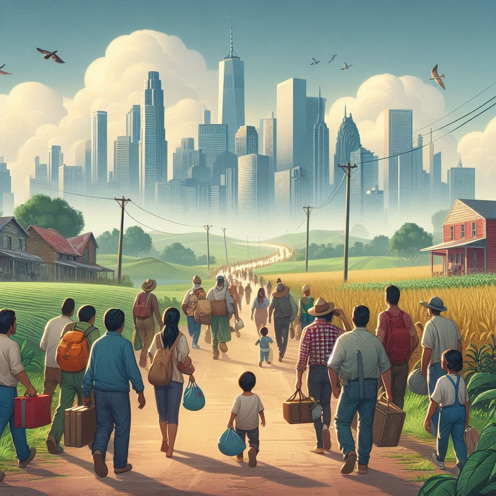

Nas primeiras décadas do século XX, grandes ondas migratórias começaram a se deslocar do campo para as cidades em busca de melhores oportunidades.
Início da Migração
Transformação Cultural
A migração trouxe uma fusão de culturas, onde tradições rurais e urbanas se misturaram, criando novas identidades culturais nas cidades.
Desenvolvimento Econômico
As cidades passaram a ser polos econômicos, oferecendo novas oportunidades de trabalho, enquanto o campo se modernizava e integrava novas tecnologias.
Impacto na Educação
A educação foi fundamental para preparar os migrantes para os desafios da vida urbana, oferecendo novas perspectivas e qualificações profissionais.